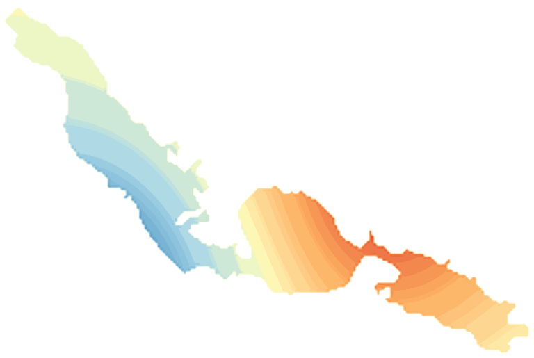

LakeScope › AZ
Roosevelt Lake today
Updated 2026-11-14 - Atlas Labs
Murky water, 68°F water, calm this afternoon.
Water level
No fresh view yet. No gauge on this lake. From the shoreline: steady since about a week ago.
Water clarity and algae
Murky water Last clear view: about a week ago.
Surface temperature
68°F
seen from space on 2026-11-12

Weather, next 3 days
| Day | Sky | High / low | Wind | Rain |
|---|---|---|---|---|
| Saturday | Chance Rain Showers then Partly Sunny | 64 / 51°F | 5 mph SW | 29% |
| Sunday | Sunny | 69 / 52°F | 5 mph E | 0% |
| Monday | Sunny | 72 / 57°F | 5 mph E | 0% |
Sunrise 06:56 - sunset 17:21 - Waxing crescent. National Weather Service.
Get the LakeScope app: alerts and the 3-D view of Roosevelt Lake